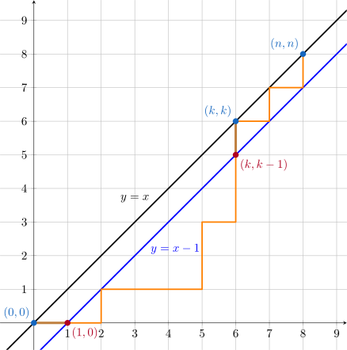
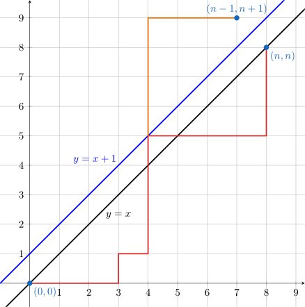
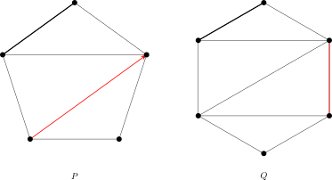

OI Wiki · prijevod · MatematikaOI Wiki · translation · Mathematics
Catalanovi brojeviCatalan numbers
Sadržaj
Uvod
Catalanovi brojevi često se pojavljuju u raznim problemima prebrojavanja. Belgijski matematičar Eugène Charles Catalan otkrio je ovaj niz 1958. proučavajući problem prebrojavanja nizova zagrada, pa je niz po njemu i dobio ime. Minggatu, matematičar iz dinastije Qing, otkrio je ovaj niz već 1730-ih godina.
Catalanovi brojevi zadovoljavaju sljedeću rekurzivnu relaciju:
Prvih nekoliko članova niza (OEIS: A000108, indeksi počinju od \(0\)):
Primjene
Rekurzivna relacija Catalanovih brojeva \(C_n\) ima prirodnu rekurzivnu strukturu: problem prebrojavanja \(C_n\) veličine \(n\) može se, prolaskom po točki razdvajanja, rastaviti na dva potproblema veličina \(i\) i \((n-1-i)\). Zbog te se rekurzivne relacije Catalanovi brojevi pojavljuju u mnogim problemima sa sličnom rekurzivnom strukturom.
-
Prebrojavanje putova: zadana je kvadratna mreža veličine \(n\times n\) s donjim lijevim kutom \((0, 0)\) i gornjim desnim kutom \((n, n)\). Krećemo iz donjeg lijevog kuta, u svakom koraku smijemo ići samo za jednu jedinicu udesno ili prema gore, i ne smijemo prijeći iznad dijagonale \(y=x\) (smijemo je dodirnuti). Ukupan broj putova do gornjeg desnog kuta jest \(C_n\).
Dokaz
Neka je broj načina \(T_n\). Promotrimo slučaj \(n \ge 2\). Neka je točka u kojoj put prvi put dođe na dijagonalu \(y=x\) točka \((k,k)~(k \in [1,n])\). Promotrimo putove od \((0,0)\) do \((k,k)\) čije međutočke, osim početka i kraja, ne prolaze dijagonalom (ne smiju je dodirnuti).

Kao što prikazuje slika, prvi je korak takvih putova nužno udesno, od \((0,0)\) do \((1,0)\), a posljednji je korak nužno prema gore, od \((k,k-1)\) do \((k,k)\). Stoga su ti putovi upravo putovi od \((1,0)\) do \((k,k-1)\) koji ne prelaze pravac \(y=x-1\), pa ih ima \(T_{k-1}\). Istodobno, broj dopuštenih putova od \((k,k)\) do \((n,n)\) jest \(T_{n-k}\). Prema principu umnoška, broj putova koji prvi put dodirnu dijagonalu u \((k,k)\) jest \(T_{k-1} T_{n-k}\). Prolaskom po svim mogućnostima za \(k\) ukupan broj dopuštenih putova iznosi
\[ T_n = \sum_{k=1}^n T_{k-1}T_{n-k}. \]Supstitucijom \(k=i+1\) vidi se da je to upravo rekurzivna relacija Catalanovih brojeva. Iz \(T_0=1\) slijedi \(T_n = C_n\).
-
Prebrojavanje tetiva u kružnici koje se ne sijeku: na kružnici je \(2n\) točaka. Broj načina da se te točke spoje u parove tako da se dobivenih \(n\) dužina međusobno ne sijeku jest \(C_n\).
Dokaz
Označimo broj načina za \(2n\) točaka s \(T_n\). Numerirajmo \(2n\) točaka u smjeru kazaljke na satu brojevima \(1,2,\ldots,2n\). Budući da se tetive međusobno ne sijeku, točka \(1\) može se spojiti samo s točkom parnog broja; inače se neparan broj točaka između njih ne bi mogao upariti bez presijecanja spojnice tih dviju točaka. Ako spojimo \(1\) i \(2k~(k\in[1,n])\), s lijeve je strane \(2k-2\) točaka, a s desne \(2n-2k\) točaka, pa je prema principu umnoška broj takvih načina \(T_{k-1}T_{n-k}\). Stoga, prolaskom po \(k\), vrijedi \(T_n = \sum_{k=1}^n T_{k-1} T_{n-k}\). Uz \(k=i+1\) dobivamo rekurzivnu relaciju Catalanovih brojeva. Iz \(T_0=1\) slijedi \(T_n=C_n\).
-
Prebrojavanje triangulacija: broj načina da se konveksni \((n+2)\)-terokut podijeli na trokute dijagonalama koje se ne sijeku jest \(C_n\).
Dokaz
Neka je broj triangulacija \((n+2)\)-terokuta \(T_n\). Najprije odaberimo stranicu \((1,n+2)\) kao osnovicu; ona nužno pripada nekom trokutu, a treći vrh tog trokuta označimo \(k~(k\in[2,n+1])\). Tako se izvorni konveksni mnogokut raspada na tri dijela:
- trokut \((1,k,n+2)\);
- \(k\)-terokut s vrhovima \(1\sim k\);
- \((n+3-k)\)-terokut s vrhovima \(k\sim (n+2)\).
Posljednja su dva dijela potproblemi, pa vrijedi rekurzivna relacija
\[ T_n = \sum_{k=2}^{n+1} T_{k-2}T_{n+1-k}. \]Uz \(k=i+2\) dobivamo rekurzivnu relaciju Catalanovih brojeva. Iz \(T_0=T_1=1\) slijedi \(T_n=C_n\).
-
Prebrojavanje binarnih stabala: broj različitih oblika binarnih stabala s \(n\) čvorova jest \(C_n\). Ekvivalentno, broj različitih oblika punih binarnih stabala s \(n\) unutarnjih čvorova (koji nisu listovi) jest \(C_{n}\).
Dokaz
Označimo broj binarnih stabala s \(n\) čvorova s \(T_n\). Uzmimo bilo koji korijen i prođimo po veličinama lijevog i desnog podstabla. Ako je veličina lijevog podstabla \(i\in[0,n-1]\), veličina desnog podstabla je \((n-1-i)\). Lijevo i desno podstablo oba su potproblemi, pa vrijedi rekurzivna relacija
\[ T_n = \sum_{i=0}^{n-1}T_iT_{n-1-i}. \]To je upravo rekurzivna relacija Catalanovih brojeva. Iz \(T_0=T_1=1\) slijedi \(T_n=C_n\).
-
Prebrojavanje nizova zagrada: broj ispravnih nizova zagrada sastavljenih od \(n\) parova zagrada jest \(C_n\).
Dokaz
Povežimo to s problemom prebrojavanja putova. Lijevu zagradu promatramo kao korak prema gore, a desnu kao korak udesno. Niz zagrada ispravan je ako na svakoj poziciji broj lijevih zagrada nije manji od broja desnih. To odgovara uvjetu u problemu prebrojavanja putova da u svakom trenutku broj koraka prema gore nije manji od broja koraka udesno. Stoga postoji bijekcija između ispravnih nizova zagrada i dopuštenih putova. Broj ispravnih nizova zagrada također je \(C_n\).
-
Prebrojavanje redoslijeda skidanja sa stoga: redoslijed stavljanja na (neograničeni) stog je \(1,2,3, \ldots ,n\). Broj ispravnih redoslijeda skidanja sa stoga jest \(C_n\).
Dokaz
Povežimo to s problemom prebrojavanja nizova zagrada. Stavljanje na stog promatramo kao lijevu zagradu, a skidanje sa stoga kao desnu. U svakom trenutku broj stavljanja na stog nije manji od broja skidanja. Stoga postoji bijekcija između ispravnih redoslijeda skidanja sa stoga i ispravnih nizova zagrada. Broj ispravnih redoslijeda skidanja također je \(C_n\).
-
Prebrojavanje nizova: među nizovima \(a_1,a_2, \ldots ,a_{2n}\) sastavljenima od \(n\) jedinica \(+1\) i \(n\) jedinica \(-1\), broj onih čije parcijalne sume zadovoljavaju \(a_1+a_2+ \ldots +a_k \geq 0~(k=1,2,3, \ldots ,2n)\) jest \(C_n\).
Dokaz
Povežimo to s problemom prebrojavanja nizova zagrada. \(+1\) promatramo kao lijevu zagradu, a \(-1\) kao desnu. U svakom trenutku broj članova \(+1\) nije manji od broja članova \(-1\). Stoga postoji bijekcija između dopuštenih nizova i ispravnih nizova zagrada. Broj dopuštenih nizova također je \(C_n\).
Iako se ova rekurzivna relacija široko primjenjuje, njezino je izravno računanje prilično složeno, pa treba potražiti jednostavnije formule.
Uobičajeni oblici
Catalanovi brojevi imaju sljedeće uobičajene izraze:
Svi se ovi oblici Catalanovih brojeva mogu učinkovito računati: prva dva svode ih na računanje faktorijela i binomnih koeficijenata, a treći daje rekurzivnu formulu za računanje redom.
Za ova tri uobičajena oblika u ovom članku dajemo dva načina dokazivanja.
Algebarsko izvođenje
Algebarsko izvođenje gornjih izraza za Catalanove brojeve ima dva koraka. Najprije provjeravamo da su ta tri oblika međusobno ekvivalentna.
Dokaz ekvivalencije izraza \((2)\sim(4)\)
Dovoljno je dokazati da se izraz \((3)\) može prevesti u oblik s faktorijelima iz izraza \((2)\):
Također, i izraz \((4)\) može se prevesti u oblik s faktorijelima iz izraza \((2)\):
Dakle, ta su tri izraza međusobno ekvivalentna.
Zatim provjeravamo da su ti oblici doista rješenja rekurzivne formule Catalanovih brojeva. U tu svrhu metodom funkcija izvodnica izravno rješavamo rekurzivnu formulu \((1)\).
Rješavanje rekurzivne formule \((1)\) metodom funkcija izvodnica
Promotrimo običnu funkciju izvodnicu Catalanovih brojeva \(C(x)=\sum_{n=0}^{\infty}C_nx^n\). Budući da rekurzivna relacija Catalanovih brojeva vrlo nalikuje obliku konvolucije, pokušajmo pomoću konvolucije sastaviti jednadžbu za \(C(x)\):
Pritom je u pretposljednjoj jednakosti zamijenjen redoslijed sumiranja i stavljeno \(j=n-1-i\). Odatle rješavanjem dobivamo:
Iz početnog uvjeta \(C_0=1\) slijedi \(C(0)=1\). Uvrštavanjem se vidi da je jedino moguće rješenje
Zatim to treba razviti u red potencija. Prema razvoju u red potencija funkcije \((1+x)^a\) vrijedi:
gdje je \(\left(\dfrac{1}{2}\right)_{-n}\) padajuća faktorijelna potencija:
Uvrštavanjem u izraz za \(C(x)\) dobivamo
Time smo dobili izraz \((2)\) za \(C_n\).
Kombinatorno značenje
Budući da Catalanovi brojevi imaju jasno kombinatorno značenje, ti se oblici mogu dokazati i isključivo metodama kombinatornog prebrojavanja. U ovom odjeljku za svaki od triju izraza dajemo po jedan kombinatorni dokaz.
Dokaz izraza \((2)\)
Promotrimo problem prebrojavanja nizova. Za proizvoljan niz \(\{a_i\}_{i=1}^{2n}\) sastavljen od \(\pm 1\) definirajmo njegove parcijalne sume \(S_i = \sum_{j=1}^{i}a_i\) i definirajmo njegov višak (exceedance) kao broj indeksa za koje je \(S_i < 0\) i \(a_i = -1\). Višak jednak \(0\) ekvivalentan je tome da je niz dopušten; višak poprima vrijednosti iz \([0,n]\), dakle ukupno \((n+1)\) mogućih vrijednosti. Treba dokazati da je broj nizova s različitim vrijednostima viška zapravo jednak.
U tu svrhu konstruiramo preslikavanje \(f\) s nizova viška \(e > 0\) na nizove viška \((e-1)\). Za niz \(\{a_i\}\) viška \(e > 0\) neka je \(k\) najmanji indeks za koji vrijedi \(S_i = 0\) i \(a_i = +1\). Zamijenimo li dijelove niza lijevo i desno od \(a_k\), dobivamo sljedeći niz \(\{a'_i\}\):
Budući da se niz parcijalnih suma koji odgovara dijelu izvornog niza desno od \(a_k\) zamjenom ne mijenja, ne mijenja se ni njegov doprinos višku. Dijelu izvornog niza lijevo od \(a_k\) parcijalne se sume nakon zamjene sve povećaju za \(1\), pa se njegov doprinos višku smanjuje, i to točno za broj indeksa u dijelu izvornog niza lijevo od \(a_k\) za koje je \(S_i=-1\) i \(a_i=-1\). Budući da izbor \(a_k\) jamči da postoji točno jedan takav indeks, višak niza \(\{a'_i\}\) jednak je \((e-1)\). Drugim riječima, preslikavanje \(f\) smanjuje višak niza za točno \(1\).
Preslikavanje \(f\) je invertibilno. Primijetimo da je u nizu \(\{a'_i\}\) pozicija koja odgovara \(a_k\) upravo najveći indeks za koji vrijedi \(S'_k=+1\) i \(a'_i = +1\). To je zato što su nakon zamjene te parcijalne sume točno za \(1\) veće od odgovarajućih parcijalnih suma prije zamjene, pa sadašnja parcijalna suma \(+1\) odgovara parcijalnoj sumi \(0\) prije zamjene. No prema izboru \(k\), u tom dijelu (tj. u dijelu izvornog niza lijevo od \(a_k\)) prije zamjene nema indeksa za koji vrijedi \(S_i = 0\) i \(a_i = +1\).
Time preslikavanje \(f\) čini bijekciju između nizova viška \(e>0\) i nizova viška \((e-1)\). To pokazuje da je broj nizova s različitim vrijednostima viška zapravo jednak. Budući da je ukupan broj nizova \(\dbinom{2n}{n}\), broj dopuštenih nizova (tj. nizova viška \(0\)) jednak je
Time je dokazan izraz \((2)\) za Catalanove brojeve.
Dokaz izraza \((3)\)
Promotrimo problem prebrojavanja putova. To je tipičan problem prebrojavanja rešetkastih putova koji se može riješiti principom refleksije. Konkretno, u ovom problemu od ukupnog broja putova oduzimamo broj nedopuštenih putova. Ukupno treba napraviti \(2n\) koraka, od kojih je \(n\) udesno, pa je ukupan broj putova \(\dbinom{2n}{n}\). Put je nedopušten ako i samo ako dodiruje pravac \(y = x+1\). Za svaki nedopušteni put možemo pronaći mjesto na kojem prvi put dodiruje pravac \(y = x+1\) i dio puta nakon tog mjesta zrcaliti s obzirom na pravac \(y=x+1\). Tada se vidi da nedopušteni put od \((0,0)\) do \((n,n)\) postaje put od \((0,0)\) do \((n-1,n+1)\).

Budući da put od \((0,0)\) do \((n-1,n+1)\) nužno prelazi pravac \(y = x+1\), svaki takav put odgovara jednom nedopuštenom putu od \((0,0)\) do \((n,n)\). Analogno računanju ukupnog broja putova, ukupan broj nedopuštenih putova jest \(\dbinom{2n}{n+1}\). Stoga je ukupan broj dopuštenih putova
To je upravo izraz \((3)\) za Catalanove brojeve.
Dokaz izraza \((4)\)
Promotrimo problem prebrojavanja triangulacija. Neka je \(P\) konveksni \((n+2)\)-terokut i fiksirajmo jednu njegovu stranicu kao osnovicu. Za svaku triangulaciju mnogokuta \(P\) možemo odabrati jedan njezin brid koji nije osnovica (uključujući bridove dodane triangulacijom), označiti ga i orijentirati. Ukupno postoji \((4n+2)C_n\) takvih triangulacija s oznakom. Neka je nadalje \(Q\) konveksni \((n+3)\)-terokut i opet fiksirajmo jednu njegovu stranicu kao osnovicu. Za mnogokut \(Q\) možemo odabrati jednu stranicu koja nije osnovica, označiti je, a zatim napraviti triangulaciju. Ukupno postoji \((n+2)C_{n+1}\) takvih oznaka s triangulacijom.

Kao što prikazuje slika, između rezultata tih dviju skupina operacija postoji očita bijekcija. Za jedan rezultat triangulacije i označavanja mnogokuta \(P\) možemo označeni brid proširiti u trokut tako da krajnju točku na koju pokazuje orijentacija proširimo u novu stranicu i tu novu stranicu označimo, čime dobivamo jedan rezultat označavanja i triangulacije mnogokuta \(Q\); za jedan rezultat označavanja i triangulacije mnogokuta \(Q\) možemo označenu stranicu sažeti u jednu točku, a dijagonalu dobivenu sažimanjem označiti i orijentirati prema vrhu dobivenom sažimanjem, čime dobivamo jedan rezultat triangulacije i označavanja mnogokuta \(P\). Stoga
Malim sređivanjem i uz \(C_0=1\) dobivamo izraz \((4)\) za Catalanove brojeve.
Primjer zadatka
Luogu P1044 栈 (Stog)
Redoslijed stavljanja na stog je \(1,2,\ldots ,n\). Odredite ukupan broj svih mogućih redoslijeda skidanja sa stoga.
Referentni kôd
#include <iostream>
using namespace std;
int n;
long long f[25];
int main() {
f[0] = 1;
cin >> n;
for (int i = 1; i <= n; i++) f[i] = f[i - 1] * (4 * i - 2) / (i + 1);
// ovdje se koristi uobičajeni oblik (4)
cout << f[n] << endl;
return 0;
}
f = [0] * 25
f[0] = 1
n = int(input())
for i in range(1, n + 1):
f[i] = f[i - 1] * (4 * i - 2) // (i + 1)
# ovdje se koristi uobičajeni oblik (4)
print(f[n])
Zadaci za vježbu
- Luogu P2532 [AHOI2012] 树屋阶梯 (Stube do kućice na drvetu)
- Luogu P1641 [SCOI2010] 生成字符串 (Generiranje niza znakova)
- Luogu P3200 [HNOI2009] 有趣的数列 (Zanimljiv niz)
- AtCoder Beginner Contest 205 E - White and Black Balls
- AtCoder Regular Contest 145 C - Split and Maximize
- Luogu P5014 水の三角（修改版）(Vodeni trokut, izmijenjena inačica)
- Luogu P3978 [TJOI2015] 概率论 (Teorija vjerojatnosti)
Literatura i bilješke
Contents
Introduction
Catalan numbers frequently appear in various counting problems. The Belgian mathematician Eugène Charles Catalan discovered this sequence in 1958 while studying the problem of counting bracket sequences, and the sequence is named after him. The Qing dynasty mathematician Minggatu had already discovered this sequence as early as the 1730s.
Catalan numbers satisfy the following recurrence:
The first few terms of the sequence are (OEIS: A000108, indices start from \(0\)):
Applications
The recurrence of the Catalan numbers \(C_n\) has a natural recursive structure: a counting problem \(C_n\) of size \(n\) can be split, by enumerating the split point, into two subproblems of sizes \(i\) and \((n-1-i)\). This recurrence makes Catalan numbers appear widely in problems with a similar recursive structure.
-
Path counting: there is an \(n\times n\) grid with bottom-left corner \((0, 0)\) and top-right corner \((n, n)\). Starting from the bottom-left corner, each step can only go one unit to the right or up, and the path must not go above the diagonal \(y=x\) (it may touch it). The total number of such paths reaching the top-right corner is \(C_n\).
Proof
Let the number of ways be \(T_n\). Consider the case \(n \ge 2\). Let the point where the path reaches the diagonal \(y=x\) for the first time be \((k,k)~(k \in [1,n])\). Consider the paths from \((0,0)\) to \((k,k)\) whose intermediate points, other than the start and end, do not pass through the diagonal (must not touch it).
As shown in the figure, the first step of such a path must go right, from \((0,0)\) to \((1,0)\), and the last step must go up, from \((k,k-1)\) to \((k,k)\). Therefore, these paths are exactly the paths from \((1,0)\) to \((k,k-1)\) that do not cross the line \(y=x-1\), so their number is \(T_{k-1}\). Meanwhile, the number of valid paths from \((k,k)\) to \((n,n)\) is \(T_{n-k}\). By the multiplication principle, the number of paths that first touch the diagonal at \((k,k)\) is \(T_{k-1} T_{n-k}\). Enumerating all possibilities for \(k\), the total number of valid paths is
\[ T_n = \sum_{k=1}^n T_{k-1}T_{n-k}. \]Substituting \(k=i+1\), one sees that this is exactly the Catalan recurrence. From \(T_0=1\) it follows that \(T_n = C_n\).
-
Counting non-crossing chords in a circle: there are \(2n\) points on a circle. The number of ways to connect these points in pairs so that the resulting \(n\) segments are pairwise non-crossing is \(C_n\).
Proof
Denote the number of ways for \(2n\) points by \(T_n\). Label the \(2n\) points clockwise as \(1,2,\ldots,2n\). Since the chords are pairwise non-crossing, point \(1\) can only be connected to an even-numbered point; otherwise the odd number of points between them could not be paired up without crossing the segment joining the two points. If \(1\) is connected to \(2k~(k\in[1,n])\), then there are \(2k-2\) points on the left and \(2n-2k\) points on the right, so by the multiplication principle the number of such ways is \(T_{k-1}T_{n-k}\). Therefore, enumerating \(k\), we have \(T_n = \sum_{k=1}^n T_{k-1} T_{n-k}\). Letting \(k=i+1\), we obtain the Catalan recurrence. From \(T_0=1\) it follows that \(T_n=C_n\).
-
Counting triangulations: the number of ways to divide a convex \((n+2)\)-gon into triangles by non-crossing diagonals is \(C_n\).
Proof
Let the number of triangulations of an \((n+2)\)-gon be \(T_n\). First fix the side \((1,n+2)\) as the base; it must belong to some triangle, and denote the third vertex of that triangle by \(k~(k\in[2,n+1])\). Thus, the original convex polygon is split into three parts:
- the triangle \((1,k,n+2)\);
- a \(k\)-gon with vertices \(1\sim k\);
- an \((n+3-k)\)-gon with vertices \(k\sim (n+2)\).
The latter two parts are both subproblems, so we have the recurrence
\[ T_n = \sum_{k=2}^{n+1} T_{k-2}T_{n+1-k}. \]Letting \(k=i+2\), we obtain the Catalan recurrence. From \(T_0=T_1=1\) it follows that \(T_n=C_n\).
-
Counting binary trees: the number of structurally distinct binary trees with \(n\) nodes is \(C_n\). Equivalently, the number of structurally distinct full binary trees with \(n\) non-leaf nodes is \(C_{n}\).
Proof
Denote the number of binary trees with \(n\) nodes by \(T_n\). Take an arbitrary root and enumerate the sizes of the left and right subtrees. If the left subtree has size \(i\in[0,n-1]\), then the right subtree has size \((n-1-i)\). Both subtrees are subproblems, so we have the recurrence
\[ T_n = \sum_{i=0}^{n-1}T_iT_{n-1-i}. \]This is exactly the Catalan recurrence. From \(T_0=T_1=1\) it follows that \(T_n=C_n\).
-
Counting bracket sequences: the number of valid bracket sequences formed by \(n\) pairs of brackets is \(C_n\).
Proof
Relate this to the path counting problem. View a left bracket as a step up and a right bracket as a step right. A bracket sequence is valid if, at every position, the number of left brackets is not less than the number of right brackets. This corresponds to the condition in the path counting problem that, at any moment, the number of steps up is not less than the number of steps right. Therefore, there is a bijection between valid bracket sequences and valid paths. The number of valid bracket sequences is likewise \(C_n\).
-
Counting stack pop sequences: the push sequence of an (infinite) stack is \(1,2,3, \ldots ,n\). The number of valid pop sequences is \(C_n\).
Proof
Relate this to the bracket sequence counting problem. View a push as a left bracket and a pop as a right bracket. At any moment, the number of pushes is not less than the number of pops. Therefore, there is a bijection between valid pop sequences and valid bracket sequences. The number of valid pop sequences is likewise \(C_n\).
-
Counting sequences: among the sequences \(a_1,a_2, \ldots ,a_{2n}\) consisting of \(n\) copies of \(+1\) and \(n\) copies of \(-1\), the number of those whose partial sums satisfy \(a_1+a_2+ \ldots +a_k \geq 0~(k=1,2,3, \ldots ,2n)\) is \(C_n\).
Proof
Relate this to the bracket sequence counting problem. View \(+1\) as a left bracket and \(-1\) as a right bracket. At any moment, the number of \(+1\)'s is not less than the number of \(-1\)'s. Therefore, there is a bijection between valid sequences and valid bracket sequences. The number of valid sequences is likewise \(C_n\).
Although this recurrence is widely applicable, computing it directly has a high complexity, so we need to look for simpler formulas.
Common forms
Catalan numbers have the following common expressions:
All of these forms of the Catalan numbers can be computed efficiently: the first two reduce the problem to computing factorials and binomial coefficients, while the third provides a recurrence for computing them one after another.
For these three common forms, this article provides two methods of proof.
Algebraic derivation
Deriving the above expressions for Catalan numbers algebraically takes two steps. First, verify that the three forms are mutually equivalent.
Proof that expressions \((2)\sim(4)\) are equivalent
It suffices to show that expression \((3)\) can be transformed into the factorial form of expression \((2)\):
Also, expression \((4)\) can be transformed into the factorial form of expression \((2)\):
Therefore, the three expressions are mutually equivalent.
Next, verify that these forms are indeed solutions of the Catalan recurrence. To this end, we use the generating function method to solve the recurrence \((1)\) directly.
Solving the recurrence \((1)\) with the generating function method
Consider the ordinary generating function of the Catalan numbers, \(C(x)=\sum_{n=0}^{\infty}C_nx^n\). Since the Catalan recurrence closely resembles the form of a convolution, we try to use a convolution to construct an equation for \(C(x)\):
Here, the second-to-last equality swaps the order of summation and sets \(j=n-1-i\). Solving, we obtain:
From the initial condition \(C_0=1\) we know \(C(0)=1\). Substituting to check, the only feasible solution is
Next, we need to expand it as a power series. By the power series expansion of \((1+x)^a\), we have:
where \(\left(\dfrac{1}{2}\right)_{-n}\) is the falling factorial power:
Substituting into the expression for \(C(x)\), we get
This yields expression \((2)\) for \(C_n\).
Combinatorial meaning
Since Catalan numbers have a clear combinatorial meaning, these forms can also be proved using only combinatorial counting methods. This section provides one combinatorial proof for each of the three expressions.
Proof of expression \((2)\)
Consider the sequence counting problem. For an arbitrary sequence \(\{a_i\}_{i=1}^{2n}\) consisting of \(\pm 1\), define its partial sums \(S_i = \sum_{j=1}^{i}a_i\), and define its exceedance as the number of indices with \(S_i < 0\) and \(a_i = -1\). An exceedance of \(0\) is equivalent to the sequence being valid; the exceedance ranges over \([0,n]\), so there are \((n+1)\) possible values in total. What we need to prove is that the numbers of sequences with different exceedances are actually the same.
To this end, we construct a map \(f\) from sequences with exceedance \(e > 0\) to sequences with exceedance \((e-1)\). For a sequence \(\{a_i\}\) with exceedance \(e > 0\), take the index \(k\) to be the smallest index such that \(S_i = 0\) and \(a_i = +1\). Swapping the parts of the sequence to the left and right of \(a_k\), we obtain the following sequence \(\{a'_i\}\):
Since the partial sums corresponding to the part of the original sequence to the right of \(a_k\) are unchanged by the swap, their contribution to the exceedance is also unchanged. For the part of the original sequence to the left of \(a_k\), the corresponding partial sums all increase by \(1\) after the swap, so their contribution to the exceedance decreases, and the decrease is exactly the number of indices in the part of the original sequence to the left of \(a_k\) with \(S_i=-1\) and \(a_i=-1\). Since the choice of \(a_k\) guarantees that there is exactly one such index, the exceedance of the sequence \(\{a'_i\}\) equals \((e-1)\). That is, the map \(f\) decreases the exceedance of a sequence by exactly \(1\).
The map \(f\) is invertible. Note that in the sequence \(\{a'_i\}\), the position corresponding to \(a_k\) is exactly the largest index such that \(S'_k=+1\) and \(a'_i = +1\). This is because after the swap, these partial sums are exactly \(1\) larger than the corresponding partial sums before the swap, so a current partial sum of \(+1\) corresponds to a partial sum equal to \(0\) before the swap. But by the choice of \(k\), before the swap this part (i.e., the part of the original sequence to the left of \(a_k\)) contains no index such that \(S_i = 0\) and \(a_i = +1\).
Hence, the map \(f\) forms a bijection between sequences with exceedance \(e>0\) and sequences with exceedance \((e-1)\). This shows that the numbers of sequences with different exceedances are actually the same. Since the total number of sequences is \(\dbinom{2n}{n}\), the number of valid sequences (i.e., sequences with exceedance \(0\)) equals
This proves expression \((2)\) for the Catalan numbers.
Proof of expression \((3)\)
Consider the path counting problem. This is a typical lattice path counting problem that can be solved by the reflection principle. Specifically for this problem, we subtract the number of invalid paths from the total number of paths. In total, \(2n\) steps are taken, \(n\) of which go right, so the total number of paths is \(\dbinom{2n}{n}\). A path is invalid if and only if it touches the line \(y = x+1\). For any invalid path, we can find the first position where it touches the line \(y = x+1\) and reflect the part of the path after that position across the line \(y=x+1\). One then sees that an invalid path from \((0,0)\) to \((n,n)\) becomes a path from \((0,0)\) to \((n-1,n+1)\).
Since a path from \((0,0)\) to \((n-1,n+1)\) must cross the line \(y = x+1\), every such path corresponds to an invalid path from \((0,0)\) to \((n,n)\). Similarly to the computation of the total number of paths, the total number of invalid paths is \(\dbinom{2n}{n+1}\). Therefore, the total number of valid paths is
This is expression \((3)\) for the Catalan numbers.
Proof of expression \((4)\)
Consider the triangulation counting problem. Let \(P\) be a convex \((n+2)\)-gon and fix one of its sides as the base. For every triangulation of the polygon \(P\), we can choose one of its non-base edges (including the edges added by the triangulation), mark it, and orient it. There are \((4n+2)C_n\) such triangulation-plus-marking configurations in total. Further, let \(Q\) be a convex \((n+3)\)-gon, again with one of its sides fixed as the base. For the polygon \(Q\), we can choose one of its non-base sides to mark, and then triangulate. There are \((n+2)C_{n+1}\) such marking-plus-triangulation configurations in total.
As shown in the figure, there is an obvious bijection between the results of these two groups of operations. For a result of triangulating and marking \(P\), we can expand its marked edge into a triangle by expanding the endpoint the orientation points to into a new side, and mark this new side, which gives a result of marking and triangulating \(Q\); for a result of marking and triangulating \(Q\), we can contract its marked side into a single point, mark the diagonal obtained by the contraction, and orient it toward the vertex obtained by the contraction, which gives a result of triangulating and marking \(P\). Therefore,
Rearranging slightly and combining with \(C_0=1\), we obtain expression \((4)\) for the Catalan numbers.
Example problem
Luogu P1044 栈 (Stack)
The push order is \(1,2,\ldots ,n\). Find the total number of all possible pop orders.
Reference code
#include <iostream>
using namespace std;
int n;
long long f[25];
int main() {
f[0] = 1;
cin >> n;
for (int i = 1; i <= n; i++) f[i] = f[i - 1] * (4 * i - 2) / (i + 1);
// here we use the common form (4)
cout << f[n] << endl;
return 0;
}
f = [0] * 25
f[0] = 1
n = int(input())
for i in range(1, n + 1):
f[i] = f[i - 1] * (4 * i - 2) // (i + 1)
# here we use the common form (4)
print(f[n])
Exercises
- Luogu P2532 [AHOI2012] 树屋阶梯 (Treehouse Stairs)
- Luogu P1641 [SCOI2010] 生成字符串 (Generating Strings)
- Luogu P3200 [HNOI2009] 有趣的数列 (Interesting Sequence)
- AtCoder Beginner Contest 205 E - White and Black Balls
- AtCoder Regular Contest 145 C - Split and Maximize
- Luogu P5014 水の三角（修改版）(Water Triangle, modified version)
- Luogu P3978 [TJOI2015] 概率论 (Probability Theory)